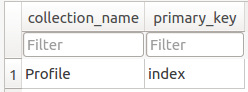
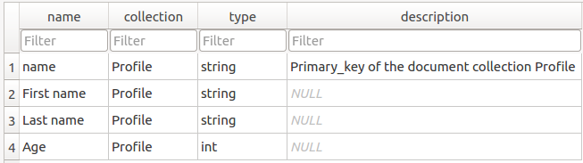
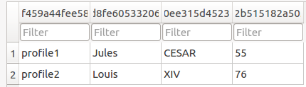

User documentation¶
Installation¶
- From source:
sudo apt-get install git
git clone https://github.com/populse/populse_db.git /tmp/populse_db
cd /tmp/populse_db
sudo python setup.py install
cd /tmp
sudo rm -r /tmp/populse_db
- python/ directory must be added to $PYTHONPATH
Usage¶
Import examples:
import populse_db
from populse_db.database import Database
import populse_db.database
Tests¶
- Unit tests have been written with the package unittest
- Continuous integration has been deployed with Travis
- The code coverage is generated with the package codecov
- The script of tests is python/populse_db/test.py, so the following command launches the tests:
python test.py (if python/populse_db/ directory has been added to $PATH, or if $PWD in the terminal)
python python/populse_db/test.py (from populse_db root directory)
Using populse_db¶
- Small script to show the initialization and some examples of calls:
import os
import tempfile
import shutil
from populse_db.database import Database, FIELD_TYPE_STRING, FIELD_TYPE_INTEGER
# Generating the database in a temp directory
temp_folder = tempfile.mkdtemp()
path = os.path.join(temp_folder, "test.db")
string_engine = 'sqlite:///' + path
database = Database(string_engine)
# Creating the session and working with it
with database as session:
# Creating a profile table
session.add_collection("Profile")
# Adding several properties
session.add_field("Profile", "First name", FIELD_TYPE_STRING)
session.add_field("Profile", "Last name", FIELD_TYPE_STRING)
session.add_field("Profile", "Age", FIELD_TYPE_INTEGER)
# Filling the table
profile1 = {}
profile1["name"] = "profile1"
profile1["First name"] = "Lucie"
profile1["Last name"] = "OUVRIER-BUFFET"
profile1["Age"] = "23"
session.add_document("Profile", profile1)
session.add_document("Profile", "profile2")
session.new_value("Profile", "profile2", "First name", "David")
session.new_value("Profile", "profile2", "Last name", "HARBINE")
session.new_value("Profile", "profile2", "Age", 23)
session.save_modifications()
shutil.rmtree(temp_folder)
The script is available here.
The database file test.py resulting from the script is available here.
As you can see in the collection table, the collection Profile has been created.
As you can see in the field table, the three fields First name, Last name, and Age have been created, in addition to the primary key.
As you can see in the collection profile table, the two profiles David and Lucie have been created.
